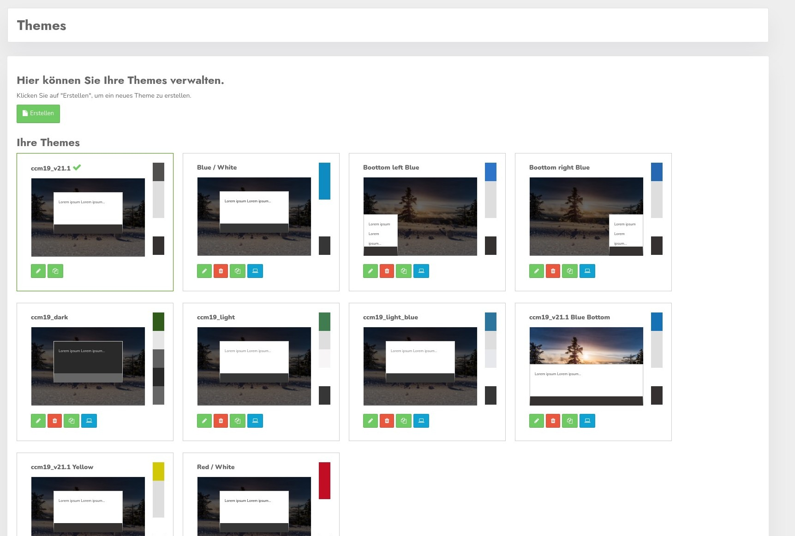
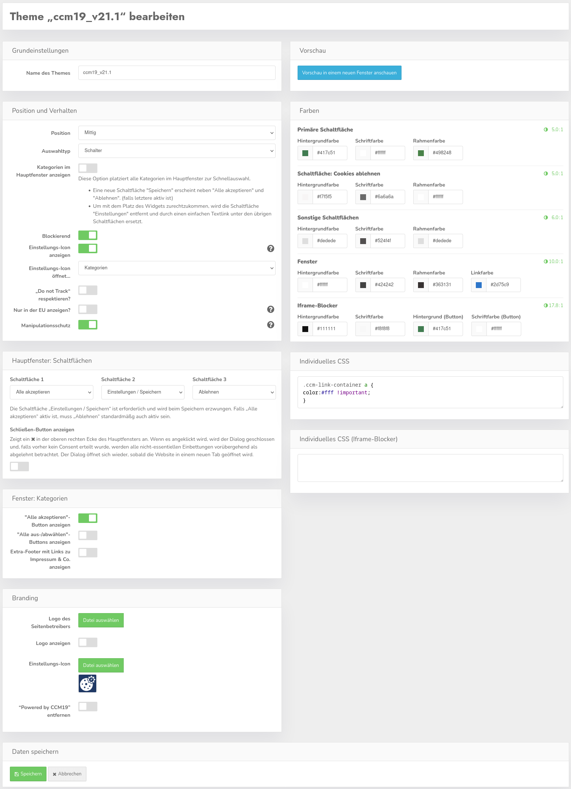
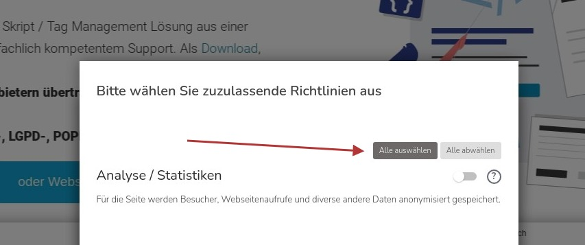
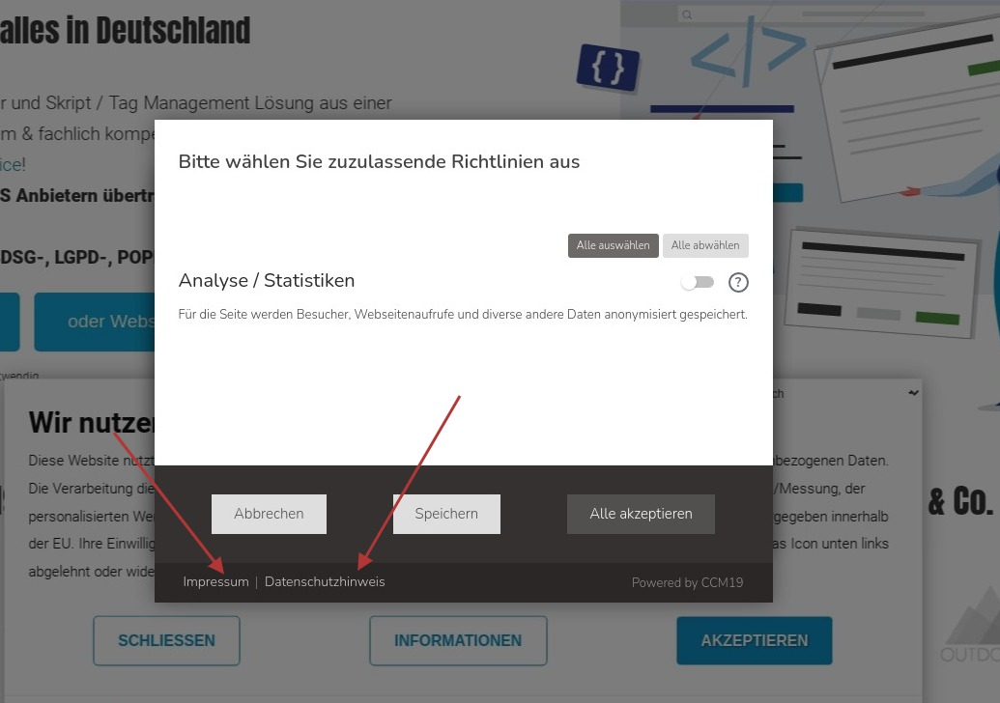
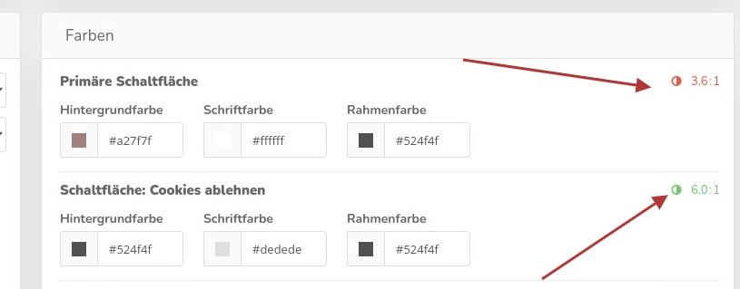

.jpg)
CCM19 ist komplett themefähig – d.h. Sie können alle Elemente des Frontends optisch anpassen. Sie können beliebig viele Themes ausprobieren.
Wenn Sie auf den Menüpunkt „Themes“ klicken sehen Sie zuerst die Übersicht der vorhandenen Themes.

Der Klick auf das grüne Stiftsymbol leitet Sie in die Bearbeitungsmaske, der rote Papierkorb löscht Ihr Theme ( nach Nachfrage ), der Klick auf die doppelten grünen Ordner kopiert das vorhandene Theme.
Mit dem Klick auf das blaue Icon setzen Sie das Theme als Standard für das Frontend.
Wenn Sie ein neues Theme anlegen wollen können Sie zum einen auf den Button „Erstellen“ klicken oder Sie kopieren ein vorhandenes Theme und passen dieses an.
Das Kopieren ist das von CCM19 empfohlene Vorgehen – auch für individuelle Anpassungen an vorhandenen Themes. Auf diese Weise haben Sie immer ein Fallback zur Hand.
In jedem Theme können Sie mit Hilfe von diversen Buttons und Einstellmöglichkeiten das Theme definieren. Darüber hinaus haben Sie die Möglichkeit, mit Hilfe von CSS-Anweisungen jedes optische Detail anzupassen. Die komplette Frontendmaske ist per CSS beeinflussbar.

Verwenden Sie bei den individuellen CSS-Einstellungen im Zweifel !important um Einstellungen Ihres Content-Management-Systems zu überschreiben. In der Oberfläche können Sie einiges einstellen. Die Einstellungen die Sie hier sehen, resultieren in dem folgenden Frontend.
Über den Button Vorschau können Sie sich eine Vorschau des Frontend Widgets anschauen. Der Klick öffnet nicht Ihre Seite sondern eine Seite im Inneren des CCM19 Adminbereiches. Nach jeder Änderung des Layouts ist ein Neuladen erforderlich. Das Widget ist voll funktionsfähig - d.h. Sie können alle Elemente des Widgets optisch anpassen und testen.
Im Hintergrund wird dabei immer Ihre aktuelle Startseite als Screenshot geladen damit Sie direkt den Effekt sehen.
Vorschau mit Widget.
Die Buttons und Hintergrundfarben die Sie in der Administration einstellen, kommen direkt im Frontend an. Sie können ebenfalls die Links „Impressum“ und „Datenschutzerklärung“ optisch anpassen.
Weiterhin gibt es die folgenden Einstellungsmöglichkeiten:
Hier positionieren Sie den Cookie-Banner auf der Website. Dabei können Sie folgende Positionen wählen:
Sie können auswählen, ob die Einstellungen im Banner für Kategorien und einzelnen Einbindungen mit Häkchen oder Schaltern dargestellt werden:


Die Farben können Sie natürlich über die individuellen CSS-Einstellungen anpassen.
Diese Option platziert alle Kategorien im Hauptfenster zur Schnellauswahl.
Um mit dem Platz des Widgets zurechtzukommen, wird die Schaltfläche "Einstellungen" entfernt und durch einen einfachen Textlink unter den übrigen Schaltflächen ersetzt.

Blockierend bedeutet, dass – wie auf dem Screenshot zu sehen ist – die Seite im Hintergrund abgedunkelt und blockiert wird. Erst wenn sich ein Besucher definitiv entschieden hat, ob er die Cookies akzeptiert oder nicht, wird er auf die Seite gelassen.
Wenn dieser Haken gesetzt ist, wird nach dem Bestätigen des Cookie-Banners ein Einstellungsicon per Javascript auf der Website angezeigt. Auf diese Weise kann die von der DSGVO und dem TTDSG geforderte Widerrufsmöglichkeit einfach und ohne weitere Eingriffe in die Seite bereitgestellt werden. Das Icon wird standardmäßig in der Ecke links unten platziert.

Hier stellen Sie ein, welches Fenster ein Klick auf das Einstellungsicon öffnen soll; den 1. oder den 2. Layer des Widgets, also die generelle Startansicht oder die Detailansicht mit der entsprechenden Auswahl.
Wenn diese Einstellung aktiviert ist, dann wird automatisch die Einstellung „Do not Track“ (DNT) im Browser respektiert und umgesetzt – d.h. es wird kein Cookie-Banner angezeigt, sondern direkt nur technisch notwendige Elemente geladen, wenn der Besucher DNT in seinem Browser aktiviert hat.
Allerdings gilt zu beachten, dass diese Einstellung in den meisten Browser normalerweise deaktiviert ist und von einigen Browsern bereits als veraltet betrachtet wird.
Mit dieser Einstellung können Sie festlegen dass der Cookie-Hinweis nur Besuchern aus der EU angezeigt wird. Die Auflösung erfolgt anhand der verwendeten IP des Besuchers und kann daher nicht 100%ig genau sein. Bei Besuchern aus anderen Ländern werden alle Cookies aktiviert, außer wenn der Besucher „Do Not Track“ signalisiert und „Do Not Track respektieren“ aktiviert wurde.
Dieses Produkt enthält GeoLite2-Daten von MaxMind, verfügbar auf https://www.maxmind.com.
Diese Einstellung verhindert simulierte Klicks auf die Akzeptieren-Buttons, um die Cookie-Auswahl des Nutzers zu schützen und damit Ihre rechtliche Position bei der Abgabe des Consents zu stärken.
Leider können einige Scripte wie "fastclick", die in die Verarbeitung von Fingerberührungen und Mausklicks eingreifen, diesen Schutz auslösen. Falls Sie ein solches Script verwenden, prüfen Sie bitte, ob Sie es wirklich benötigen und ob der Cookie-Dialog trotzdem in den üblichen Mobil-Browsern benutzbar ist. Ansonsten kann es notwendig sein den Manipulationsschutz abzuschalten.
Deaktivieren Sie diese Funktion nicht, wenn Sie sich nicht sicher sind, dass es unbedingt notwendig ist. Dies könnte Ihre rechtliche Position beim Beweisen, dass Consent erteilt wurde, schwächen.
Hier können Sie die Reihenfolge und Auswahl der Schaltflächen im Hauptfenster des Cookie-Banners festlegen.
Zusätzlich kann mit der Einstellung „Schließen-Button anzeigen“ ein ✖ in der oberen rechten Ecke des Banners angezeigt werden. Ein Klick darauf schließt den Cookie-Dialog vorübergehend bis der Browser-Tab geschlossen wird und es werden nur technisch notwendige Cookies geladen.
Hinweis:
Nach TTDSG und DSGVO braucht es in einem Consent-Widget eine gleichwertige Möglichkeit die Cookies abzulehnen oder abzubrechen wie die Cookies anzunehmen. Daher wird automatisch sichergestellt, dass der Button „Einstellungen“ immer aktiv ist, und der Ablehnen-Button aktiv ist, sobald der Alles-Annehmen-Button aktiviert wurde.
Für den Ausnahmefall, dass Sie die relevanten Vorschriften für ihre Zielmärkte auch ohne einen Ablehnen-Button erfüllen können, lässt sich letztere Sicherheitsfunktion in den „Developer-Einstellungen“ abschalten.
Hier können Sie die Funktionalität im Kategorien-Fenster (2. Ebene) des Cookie-Banners festlegen.
Mit dieser Einstellung wird im Kategorien-Fenster ein zusätzlicher "Alles Akzeptieren"-Button angezeigt.


Wenn Sie hier das Häkchen setzen, wird eine entsprechende Auswahl angeboten, mit der ein Besucher alle Einbindungen auf einmal aktivieren/deaktivieren kann.

Ist dieser Haken gesetzt, wird auch in der 2. Ebene eine Fußzeile mit Links zu Impressum und Datenschutz & Co. eingeblendet.
Standardmäßig nicht aktiv.
Hier können Sie ein Logo für den Cookie-Banner hochladen. Dieses wird im Cookie-Banner oberhalb des Textes angezeigt wird. Standardmäßig wird kein Logo angezeigt.
Wenn Sie schon ein Logo hochgeladen haben und wieder löschen möchten, klicken Sie auf den Pfeil rechts neben „Datei auswählen“, dann auf „Bild zurücksetzen“ und schließlich auf Speichern.
Damit können Sie einstellen, ob das Logo im Cookie-Banner angezeigt werden soll.
Im Cookie-Banner wird standardmäßig unten rechts mit dem Text „Powered by CCM19“ auf die Website von CCM19 verlinkt. Dieser Link kann durch setzen dieses Hakens entfernt werden. Allerdings ist dies nur möglich wenn vorher eine Whitelabel-Lizenz für diese Installation erworben wurde.
Hier stellen Sie für die verschiedenen Buttons und Hintergründe im Frontend die Farben ein – Achten Sie hier darauf dass auch Rahmen teilweise davon abhängen, wenn Sie einen weißen Rahmen auf weißem Hintergrund setzen mit weißer Schrift sehen Sie natürlich nichts mehr. Am besten kontrollieren Sie jede Änderung einmal im Frontend indem Sie das Overlay neu aufrufen!
Bitte beachten Sie dass der Kontrast für die Farben auch bestimmten Mindestanforderungen genügen sollte, um einen gewisses Maß an Barrierefreiheit zu erreichen. Um dabei zu helfen, wird rechts neben den Farbeinstellungen das Kontrastverhältnis zwischen Text und Hintergrund angezeigt.

Dass der Kontrast hoch genug ist, wird farblich dargestellt. Für die Schaltflächen sollte beispielsweise ein Maß von 5:1 mindestens erreicht sein. Ist die Zahl rot, ist der Kontrast zu niedrig.
Beachten Sie bitte dass die Kontrastanzeiger zwingend grün sein müssen wenn Sie TCF / IAB nutzen.
Hier können Sie komplett individuelles CSS eintragen – für die einzelnen Elemente schauen Sie bitte in den Seiteninspektor Ihres Browsers. Im Zweifel müssen Sie Einstellungen per !important überschreiben – Beispiel:
.ccm-root button {
border:1px solid #c2bcbc;
}
.ccm-control-panel--purpose > input[type="checkbox"] + label {
color:#ccc;
}
.ccm-modal--footer {
background-color:#26282f;
}
Hier können Sie für den Iframe-Blocker individuelle CSS-Anweisungen vergeben, z.B. für spezielle Hintergrundbilder. Um das Setzen von gezieltem CSS zu vereinfachen, wird die blockierte Domain als CSS-Klasse auf dem HTML-Element gesetzt.
Beispiel:
https://www.google.com/maps/…domain--www-google-com```
html.domain--www-google-com body {
background-image: url('google-maps-placeholder.jpg');
}
html.domain--www-facebook-com body {
background-image: url('facebook-placeholder.jpg');
}